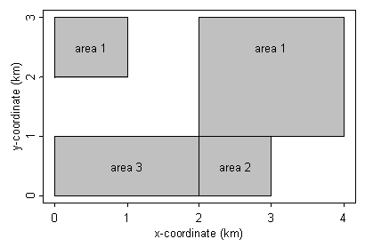

Import/exporting maps

Importing Splus format
map:3
Xscale: 1000
Yscale: 1000
1 area1
2 area2
3 area3
area1 0 2
area1 1 2
area1 1 3
area1 0 3
NA NA NA
area1 2 1
area1 4 1
area1 4 3
area1 2 3
NA NA NA
area2 0 0
area2 2 0
area2 2 1
area2 0 1
NA NA NA
area3 2 0
area3 3 0
area3 3 1
area3 2 1
ENDThe Splus import file is in three parts:
The first line contains the key word '
map' (lower case) followed by a colon and an integer,
N, where
N is the number of distinct areas in the map (note that one area can consist of more than one polygon).
The 2nd and 3rd lines areoptional, and can be used to specify the units for the map scale. By default, GeoBUGS assumes that the polygon coordinates are measured in metres. If the coordinates are measured in kilometres, say, then specify Xscale and Yscale to be 1000. GeoBUGS will then multiply all polygon co-ordinates by Xscale and Yscale as appropriate before storing the map file. If Xscale and Yscale are not specified, then the default units (metres) are assumed.The next part of the import file is a 2 column list giving:
(column 1) the numeric ID of the area - this must be a unique integer between 1 and N; the areas should be labelled in the same order as the corresponding data for that area appears in the model.
(column 2) the area label - this must start with a character, and can be a maximum of 79 alphanumeric characters (no spaces allowed)
The final part of the import file is a 3 column list giving the co-ordinates of the polygons. The format is:
(col 1) the label of the area to which the polygon belongs
(col 2) x-coordinate
(col 3) y-xoordinate
The polygon coordinates can be listed either clockwise or anticlockwise. Polygons should be separated by a row of NA's
The import file should end with the key word:
ENDNote: Brad Carlin has a link on his web page to an Splus program called poly.S to extract polygons for any state in the United States in the appropriate format for loading into GeoBUGS (http://www.biostat.umn.edu/~brad/software.html)
Importing ArcInfo format
map:3
Xscale: 1000
Yscale: 1000
1 area1
2 area2
3 area3
regions
99 area1
103 area1
210 area2
211 area3
END
99 0 0
0 2
1 2
1 3
0 3
END
103 0 0
2 1
4 1
4 3
2 3
END
210 0 0
0 0
2 0
2 1
0 1
END
211 0 0
2 0
3 0
3 1
2 1
END
END
The ArcInfo import file is in four parts:
The first 2 parts are the same as the Splus format.
The third part begins with a line containing the key word '
regions' (lower case). Below this is a 2 column list giving:
(column 1) an integer label corresponding to the integer label for one of the polygons listed in the final part of the import file. Each polygon should have a unique integer label, but this can be arbitrary (i.e. labels don't need to start at 1 or be consecutive). If using the ArcInfo command UNGENERATE to export a set of polygons, this is the integer label that ArcInfo automatically attaches to each polygon.
(column 2) the area label to which the polygon with that integer ID belongs. Note, if an area contains more than one polygon, then each polygon ID should be listed on a separate line and given the same area label (e.g., area1 in the above example).
There should be as many rows in this part of the file as there are polygons. This will be equal to or greater than the number of distinct areas in the map.
The final part of the import file gives the co-ordinates of the polygons. The format for each polygon is:
(row 1, column 1) the integer ID for the polygon (this should correspond to one of the integer IDs listed in the previous part of the import file).
(row 1, columns 2 and 3) if the polygon file has been exported directly from ArcInfo, these 2 numbers usually give the centroid of the polygon. However, they are not used by GeoBUGS, so can be arbitrary.
Subsequent rows contain a 2-column list of numbers giving the x- and y-coordinates of the poly. The polygon coordinates can be listed either clockwise or anticlockwise.
Polygons should be separated by a line containing the key word
END.
The final row of the import file should also contain the key word
END.
Importing Epimap format
map:3
Xscale: 1000
Yscale: 1000
1 area1
2 area2
3 area3
area1, 4
0, 2
1, 2
1, 3
0, 3
area1, 4
2, 1
4, 1
4, 3
2, 3
area2, 4
0, 0
2, 0
2, 1
0, 1
area3, 4
2, 0
3, 0
3, 1
2, 1
END
The Epimap import file is in three parts:
The first 2 parts are the same as the Splus format.
The third gives the polygon co-ordinates. The format for each polygon is:
(row 1, column 1) the label of the area to which the polygon belongs.
(row 1, column 2) the number of vertices in the polygon (note the comma separator)
Subsequent rows contain a 2-column list of numbers giving the x- and y-coordinates of the poly, separated by a comma. The polygon coordinates can be listed either clockwise or anticlockwise.
The final row of the import file should contain the key word
END.
Importing Arcview format
GeoBUGS does not have an option for loading ArcView shape files directly. However, Ms Yue Cui at the University of Minnesota has written programs in Splus and R for converting shape files into the GeoBUGS Splus format so that they can be loaded in GeoBUGS (http://www.biostat.umn.edu/~yuecui/).
Loading a poloygon file
Open the polygon file as a separate text file in OpenBUGS and select the appropriate import option from the
Map menu. (To try loading the example map files above, first copy them to a separate file, and focus the window containing this file). If the map has been loaded correctly, a
Save As dialog box will appear, prompting you to enter a name for the map file. By default, the map file will be saved in the Maps/Rsrc subdirectory of your OpenBUGS program, with a
.map extension. You can view this map by selecting
Open from the
File menu (go to the Maps/Rsrc subdirectory and select file type: map file (
*.map). You will need to exit OpenBUGS and re-start before the new map will appear on the pull-down list of avaialble maps in the
Map Tool and
Adjacency Tool of the
Map menu.
Exporting maps to Splus format
Focus the window containing the map in GeoBUGS and select
Export Splus from the
Map menu. This will write the map in Splus format to a new window. This command can be used to obtain the list of area IDs and the order in which they are specified in the GeoBUGS map (see top part of export file).